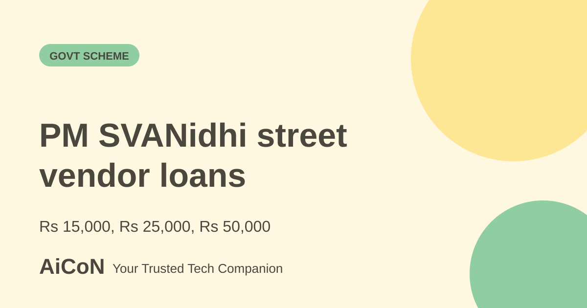

PM SVANidhi: loans for street vendors, step by step
PM SVANidhi offers eligible street vendors working-capital loans in stages. They must be repaid. The 7% interest subsidy is not the bank's loan interest rate or a promise of free money.

Loan amounts and repayment
The current restructured operational guidelines give a first loan up to ₹15,000 for 12 months, a second up to ₹25,000 for 18 months, and a third up to ₹50,000 for 36 months. A later stage follows full repayment of the earlier loan; it is not three loans paid together.
The guidelines say loans are collateral-free and repaid in monthly instalments. Prepayment is allowed without penalty or cost. The lending period runs to 31 March 2030. Ask your lender for the actual interest rate, repayment schedule and total before accepting. A guarantee protecting a lender does not remove your repayment obligation.
Who is eligible?
The revised scheme covers street vendors in urban local bodies and progressively in census towns and peri-urban areas. The city-region expansion is graded, not an automatic claim that every village is already covered. Ask the relevant municipality or Block office which route applies to your vending location.
Eligible proof includes a valid Certificate of Vending, ID card or Letter of Recommendation issued through the appropriate Urban Local Body or Town Vending Committee. For census-town and peri-urban routes, the guidelines describe an LoR approved by the Block Development Officer. Vendors must be adults, at least 18, with no upper age limit stated in the operational annexure.
Documents and digital LoR
The guidelines list vending proof, Aadhaar, bank passbook or statement with account details, and a valid unique UPI ID linked to the vendor's bank account. Their specific exception is a Voter Identity Card for vendors from Assam and Meghalaya who lack Aadhaar. A broad portal button saying “Without Aadhaar” should not be read as an unrestricted national exemption.
All Letters of Recommendation must be applied for and issued through the PM SVANidhi portal; manually issued LoRs are not valid under these guidelines. If you have a valid CoV or vending ID card, you can apply directly without an additional LoR. A digital LoR already on the portal also supports the application route.
How to apply
- Open the official PM SVANidhi portal and confirm the route for your location.
- Collect your vending proof, identity and bank details, and the required linked UPI ID.
- If you have CoV, ID card or digital LoR, apply through the portal with your preferred lending institution.
- If you lack those documents, use the LoR-cum-loan application. You can seek help from the ULB, Block office, authorised CSC or appointed resource person.
- The local authority verifies and approves the LoR digitally; the loan application then goes to the selected lender.
- Read the lender's actual sanction and repayment terms before accepting.
- Keep the application reference, verify that the money reaches your own bank account and repay on schedule.
Aadhaar-linked mobile access is advisable in the guidelines for digital processing and communication. Do not share an OTP or UPI PIN with an agent. No application or account access was performed for this guide.
How the 7% subsidy works
The operational guidelines give an interest subsidy at 7% per annum, credited quarterly. They restrict it to accounts classified as Standard, meaning non-NPA, on the claim dates and to months in the quarter when that condition held. Actual subsidy may be lower than the maximum illustrated in the annexure.
Do not treat this as 7% cashback on the loan principal or assume the bank charges exactly 7%. Timely repayment supports the subsidy and access to the next stage. Ask the lender to explain how its interest charge and subsidy appear in your account.
Low credit score is not the whole decision
The revised guidelines say a low credit score should not itself be a reason for rejection. They also allow lenders to decline where the applicant has an existing NPA loan or a loan written off by a lender. Eligibility and complete documents still matter; no agent can guarantee approval.
If an application is returned, ask for the stated reason and correct the issue through the official route. Full repayment must also be recorded on the portal so the vendor can seek the next tranche.
For street vendors in Kerala
Begin with your municipality or relevant Block office if your vending proof or coverage is unclear. Use the current digital-LoR process rather than paying for an unofficial certificate. A linked UPI ID is an application identifier, not permission to disclose your PIN.
The PIB FAQ also describes UPI-linked RuPay credit cards up to ₹30,000 for eligible vendors. That is a separate credit facility with its own checks and terms, not a grant added to every loan. Ask before taking on extra credit.
What changed since the original post?
The short post gave the revised ₹15,000, ₹25,000 and ₹50,000 amounts and 7% subsidy. This revision of the existing live article adds the operational loan tenures, digital-LoR rule, precise identity exception, Standard-account subsidy condition and credit-score distinction. It does not create a duplicate page.
Frequently asked questions
Is this free money?
No. You repay a loan under lender terms.
Can a paper LoR replace the digital one?
The revised guidelines say manually issued LoRs are not valid.
Will a low credit score automatically disqualify me?
Not by itself under the guidelines, but existing NPA or written-off loans can affect the decision.
Do I get all three amounts immediately?
No. Higher stages follow full repayment of the earlier stage.
Sources: Current operational guidelines · PIB scheme FAQ · Official portal. Checked 7 October 2026.